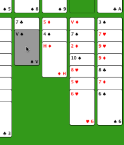
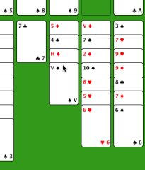

Freecell help
Freecell help
Een zet doen is makkelijk. Klik op de plek waar u een kaart vandaan wilt verplaatsen en die kaart wordt grijs gemaakt. Klik dan op de plek waar u de kaart naartoe verplaatst wilt hebben en de zet wordt uitgevoerd (als het binnen de regels van het spel mag). Als u zich vergist heeft, kunt u uw zetten onbeperkt herstellen.
Hier gaan we klaver-vrouw verplaatsen naar ruiten-heer. We klikken op de tweede kolom en de onderste kaart wordt grijs gemaakt.

Nu hebben we op de tweede kolom geklikt en de kaart is verplaatst. We hadden ook op een lege vrije-cel kunnen klikken om de kaart daarheen te verplaatsen.
